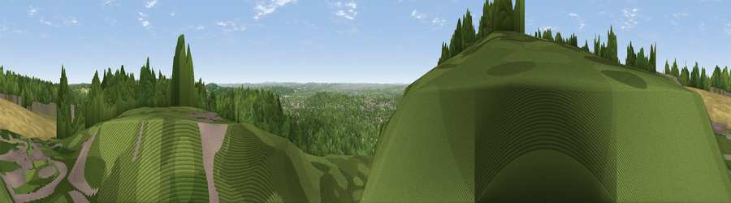

Reigate Hill
#22198 in England · top 18% of its area beats it · near GattonThe view, rendered

A 360° render of this exact spot computed from the terrain model, tree cover and land cover — summer colours, afternoon light, calibrated against photographs of famous viewpoints. Real trees, hedges and buildings will differ in detail.
The panorama
Grey silhouette: terrain skyline in each direction (720 bearings, Earth curvature and refraction included). Dashed green: skyline with trees (+15 m) and buildings (+8 m) as obstacles. Blue strip: how far the ground is visible on each bearing.
Where the view opens
Wedge length = distance to the farthest visible ground on that bearing (vegetation-aware). Rings at 10, 25 and 50 km.
What fills the view
70% woodland · 22% grassland · 6% built-up · 2% cropland
Angular shares of the visible panorama (visual magnitude), not map area. Landscape diversity 0.37 (0–1 Shannon).
Key numbers
More beautiful places nearby
The staircase of upgrades: each row has a higher view potential than everything closer. Driving times are estimates from straight-line distance, calibrated against real road routing — check an actual route before setting out.
| Place | Direction | Drive | Score |
|---|---|---|---|
| Reigate Hill | WSW · 1 km | ~2 min | 66.4 |
| Viewpoint near Reigate | WSW · 1 km | ~4 min | 66.7 |
| Viewpoint near Lower Kingswood | W · 3 km | ~6 min | 67.8 |
| Box Hill | W · 6 km | ~13 min | 70.4 |
| Viewpoint near Box Hill Village | W · 6 km | ~13 min | 71.0 |
| Viewpoint near Coldharbour | SW · 15 km | ~26 min | 71.3 |
| Wolstonbury Hill | S · 38 km | ~57 min | 79.6 |
| Viewpoint near Westmeston | S · 40 km | ~59 min | 81.1 |
51.25578, -0.19220 · source: osm viewpoint · position refined by local search. Computed location — check access rights before visiting.